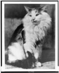

Giant Cat Attacks New York
A massive, colossal feline has been laying waste to New York City for the last 20 decades. New York City is now a ruined land where the government projects holograms to make it seem like a bustling city to the rest of the world.
Smaller Less Threatening Cat is not Threatening
A smaller, much less fearsome feline has been giving everyone join in San Antonio as the creature is super soft and sweet. It ate my Grandma alive but it's so cute that I forgive it.
Normal Cat has a Normal Day
My smaller cat Jeffery has been relaxing at home. It broke into my fridge and drank all the milk but besides that it's been the usual hairballs and unreasonable sacrifices. On second thought, a cat having a giant altar for tribute may be not so normal.
Major News
National News
Congress has decided in a unanimous vote to note outlaw cats in America despite the immense destruction they have caused. Congressmen "Nauta Katluva" states that "Cats are just too darn cute to get rid of."
International News
The American army is still combating North Korea due to the continuing debating of Cats vs Dogs. It's weird that we're having this debating since most North Koreans do not own pets."
Metro
All trains have been destroyed by cats.
Business
Once again the stocks for pet products are skyrocketing. We're at an amazing 203% increase in capitial. Financial investors state it may be because of the increasingly popularity of cats in the last 2 weeks.
Sports
The Superbowl is filled with cats.
Art & Leisure
Mona Lisa is worth 0 USD now as cat paintings are more popular. Painting cats is America's new favorite pass time.